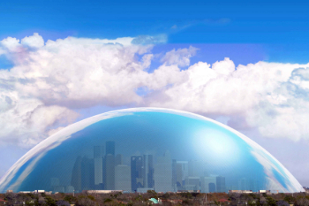
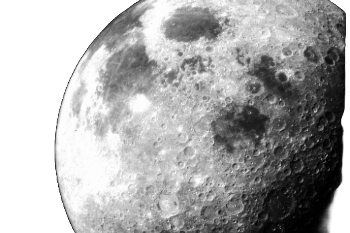

Vsebina: Raziskujte raznolikost življenja, od mikroorganizmov do velikih sesalcev. Spoznajte evolucijo, ekologijo in grožnje, ki ogrožajo biodiverziteto.
Vsebina: Razmislite o vplivu človeštva na Zemljo. Odkrijte, kako uporabljamo naravne vire, kako onesnažujemo okolje in katere trajnostne rešitve razvijamo.
Ključne teme: Antropocen, naravni viri, onesnaževanje, trajnost, inovacije.

Del 4: Prihodnost našega planeta
Dolžina: 1h 6m
Vsebina: Poglobite se v podnebne spremembe, okoljsko pravičnost in mednarodna prizadevanja za zaščito našega planeta. Raziščite vizije za bolj trajnostno prihodnost.
Ključne teme: Podnebne spremembe, okoljska pravičnost, mednarodni sporazumi, trajnostne rešitve
Pozabljene civilizacije
Del 1: Civilizacija doline Inda
Dolžina: 45m
Vsebina: Raziskujte Caralsko civilizacijo, eno najstarejših civilizacij na ameriški celini, ki je cvetela v Peruju okoli 3000 pr. n. št. Odkrijte njihova napredna urbanistična načrtovanja, arhitekturo in socialne strukture. Poglobili se bomo v njihovo nenasilno družbo, ki je cvetela brez vojn, ter njihova monumentalna središča, ki še danes fascinirajo arheologe.
Vsebina: Odkrijte skrivnosti Civilizacije doline Inda, ki je obstajala med 3300 in 1300 pr. n. št. na območju današnjega Pakistana in severozahodne Indije. Raziskali bomo njihovo napredno mestno načrtovanje, kanalizacijske sisteme in gospodarske dejavnosti. Odkrijte, kako so živeli ljudje te civilizacije in kaj je povzročilo njihov nenaden propad.
Vsebina: Poglobite se v Minojsko civilizacijo, ki je cvetela na Kreti med 2700 in 1450 pr. n. št. Raziščite njihove veličastne palače, kot je Knosos, njihovo umetnost in religijo. Preučili bomo tudi njihove trgovske poti po Sredozemlju in vzroke za njihov propad, vključno s teorijami o vulkanskem izbruhu Santorinija in invazijami.
Vsebina: Spoznajte Olmeško civilizacijo, prvo veliko civilizacijo Mesoamerike, ki je obstajala med 1500 in 400 pr. n. št. Raziskovali bomo njihovo zapuščino v obliki monumentalnih kamnitih glav, njihove verske in obredne prakse ter vpliv na kasnejše mezoameriške kulture. Poglobili se bomo tudi v njihovo hierarhično družbeno strukturo in dosežke v poljedelstvu in inženirstvu.
Vsebina: Odkrijte zgodovino človeških prizadevanj za dosego Lune, od prvih znanstvenih teorij do ambicioznih vesoljskih programov. Raziščite ključne trenutke v razvoju raketne tehnologije, vključno z misijami Apollo, in srečajte pogumne astronavte, ki so prvi stopili na lunino površje. Spoznajte izzive in tragične nesreče, ki so zaznamovale pot do Lune, ter slavnostne trenutke, ko je človek prvič stopil na drug nebesni objekt.
Ključne teme: Zgodovina vesoljskih poletov, raketna tehnologija, misije Apollo, astronavti, izzivi in nesreče, prvi korak na Luni.

Del 2: Lunina prihodnost
Dolžina: 1h 5m
Vsebina: Raziskujte prihodnost raziskovanja Lune in možnosti, ki jih ponuja za človeštvo. Odkrijte trenutne in prihajajoče misije, katerih cilj je vzpostavitev stalne prisotnosti na Luni, vključno z načrti za lunarno bazo in rudarjenje lunarnih virov. Preučite znanstvene raziskave, ki se izvajajo na Luni, in razprave o tem, kako bi lahko Luna služila kot odskočna deska za še bolj ambiciozne cilje, kot so misije na Mars in izven našega Osončja.
Ključne teme: Prihodnje misije, stalna prisotnost na Luni, lunarni viri, znanstvene raziskave, načrti za prihodnost, misije na Mars.